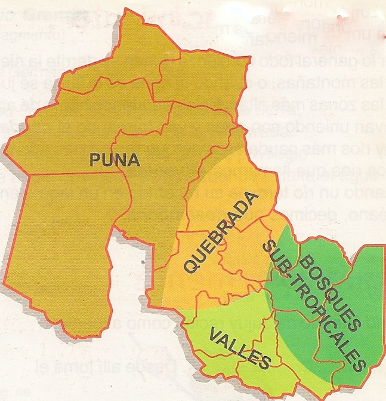
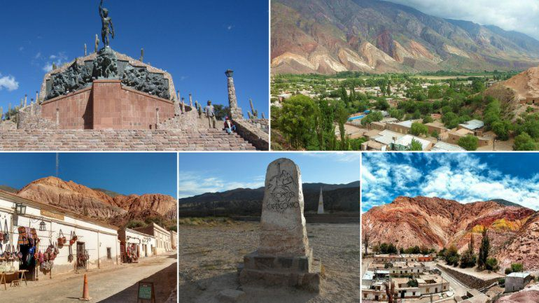

Posible origen de la palabra «Jujuy»: en la obra Marta Riquelme, Guillermo Enrique Hudson (también conocido como William Henry Hudson, 1841-1922) dice: «El kakuy es un ave que frecuenta los bosques (…) Kakuy era el antiguo nombre de ese territorio, que los primeros exploradores deletrearon por error 'Jujuy', nombre corrupto que por fin le había quedado
En el siglo XV, el actual territorio de Jujuy estaba poblado por diversos pueblos indígenas. Predominaban los ocloyas, Quechuas, Aimaras y los jujuyes, de quienes deriva el nombre de la provincia, aunque los atacameños -en especial la parcialidad lipe- eran predominantes en la región puneña. Los omaguacas eran una síntesis étnica de calchaquíes y atacameños con un fuerte componente genético arawak. La tenaz resistencia de estas poblaciones dificultó primero el avance de los incas y luego el avance español, hacia 1470 el territorio fue invadido por los quechuas procedentes del sur de Perú aliados con los aimaras procedentes del norte del territorio que hoy pertenece a Perú. En 1536 Diego de Almagro recorrió la Puna jujeña. El 20 de agosto de 1561 Juan Pérez de Zurita fundó una ciudad con el nombre de Nieva en el actual territorio jujeño entre los ríos Grande y Xibi-Xibi, pero a mediados de 1563 fue destruida por los indígenas.
En 1563, el rey Felipe II de España expidió una Real Cédula determinando los límites jurisdiccionales de la Real Audiencia de Charcas dentro del Virreinato del Perú, incluyendo dentro de ellos a la Gobernación del Tucumán. De este modo se la separó de Chile, separación que se completó en 1564 con el nombramiento de un gobernador para la «Provincia del Tucumán, Diaguitas y Juríes», con residencia en Santiago del Estero. El actual territorio jujeño quedó incluido en la nueva gobernación.
El encomendero de Omaguaca Pedro Ortiz de Zárate fundó San Francisco de la Nueva Provincia de Álava, el 13 de octubre de 1575 en la zona llamada Punta de Diamante por la cercana unión de los ríos que franquean la ciudad (el Grande de Jujuy y el Xibi Xibi), pero a principio de 1576 fue destruida nuevamente.
La resistencia de los omahuaca u omaguacas estuvo comprendida con la de los diaguitas de modo que en la llamada Guerra Calchaquí participaban los pueblos aborígenes de Jujuy destacándose en ellos los jefes Kipildor (Quipildor) y Viltipoco, fue precisamente en esta provincia que los españoles cerraron el cerco a los «calchaquíes» al ser fundado el 19 de abril de 1593, en el lugar donde está emplazada actualmente la plaza Belgrano, siendo un lunes de Pascua de Resurrección y bajo la invocación del Salvador, Francisco de Argañarás y Murguía dejó establecida la fundación de la ciudad de San Salvador de Velasco en el valle de Jujuy donde quedó definitivamente asentada.
La región formó parte del Virreinato del Perú hasta 1776, en que la corona española creó el Virreinato del Río de la Plata. Al subdividirse administrativamente el Virreinato del Río de la Plata, conforme a la Real Ordenanza de Intendentes del 28 de enero de 1782, la actual Provincia de Jujuy quedó ubicada dentro de la Gobernación Intendencia de San Miguel de Tucumán. Un año y medio después, la Real Cédula del 5 de agosto de 1783, suprimió la Gobernación Intendencia del Tucumán, con lo cual Jujuy junto con Catamarca, Santiago del Estero, Salta, Tucumán y la Puna de Atacama, pasó a integrar la nueva Gobernación Intendencia de Salta del Tucumán, con sede gubernativa en la ciudad de Salta.
Geográficamente, la provincia Provincia de Jujuy se divide en cuatro grandes regiones:
La Puna o altiplano.
La Quebrada de Humahuaca.
Los Valles orientales
Yungas
De oeste tiende a bajar desde altitudes que van desde los 6000 a los 500 m s. n. m., las mayores altitudes se ubican en la Cordillera de los Andes especialmente en el sector noroeste de la provincia en donde se destaca el cerro Vilama ({5578 m s. n. m.), el cerro Zapaleri (5653) y sobre todo la ramificación lateral andina de las Serranías de Zapaleri que tiene su cima a los {5959 m s. n. m. en el Nevado de San Pedro, estas cumbres señalan el límite entre la Puna de Jujuy y la Puna de Lípez, la Puna de Jujuy al sur de los citados accidentes orográficos y al sur del Cerro Branqui señalan asimismo la estructura del tipo graben, algunos de los valles son amplios y han dado lugar a cubetas o cuencas endorreicas en cuyo fondo se ubican salares como el de Cauchari-Olaroz, las muy alcalinas y salobres lagunas de Vilama, la de Guayatayoc, la de Pozuelos, la laguna de Rontuyoc y las Salinas Grandes del NOA.
Al este de la Sierra del Aguilar y la Serranía de Chañí (el Nevado de Chañí alcanza los 6200 m s. n. m.) horsts más occidentales que señalan el límite del Altiplano el terreno cae en el prolongado y elevado graben de la Quebrada de Humahuaca abriéndose hacia el sur en la zona de quebrada y valle donde se encuentran las ciudades de San salvador de Jujuy, Palpalá, Perico y San Pedro de Jujuy, en este graben los valles son fértiles y por su vaguada o fondo discurre el Río Grande que baja desde la Quebrada de Humahuaca y el Río Chico de Jujuy o Xibi Xibi que baja desde la Serranía precordillerana del Chañi, ambos citados ríos confluyen en la ciudad de San Salvador de Jujuy y toman un único gran cauce con rumbo hacia el noreste llamado río San Francisco (afluente del río Bermejo y, con este los anteriores, integrante de la Cuenca del Plata). El graben por donde baja el Río San Francisco está delimitado de oeste a este por tres serranías menores: la Sierra de Santa Bárbara, la Sierra del Centinela y la Sierra del Maíz Gordo, de las dos últimas surgen cursos fluviales que afluyen al río Dorado directamente en el Chaco Austral.
Esto es: de oeste a este se escalonan sucesivamente la cordillera de los Andes, el Altiplano, las Quebradas y Valles, la zona más oriental de las cordilleras es de nimbosilva formando parte del extenso corredor biomático de las Yungas, el valle del río San Francisco es un importante ecotono entre las Yungas y la región del Chaco, ese ecotono del valle del río San Francisco es conocido El Ramal por sus prístinas y densas forestas.
Si en los Andes el clima es el frío de altura, y en el valle de Jujuy el clima es mesotérmico con días fríos y nevadas en invierno, en las zonas bajas de El Ramal predomina durante todo el año un clima cálido tropical bastante húmedo.
En la zona de las Sierras Subandinas el clima es cálido y húmedo; presentando un clima tropical. Por el contrario, en la amplia región de la altiplanicie de la puna jujeña el clima es extremadamente frío y con escasas precipitaciones en la mayor parte del año, caracterizándose por sus llanuras y mesetas de altura y las enormes variaciones de temperatura registradas entre las máximas de verano y mínimas de invierno, de hasta 50 °C. Por consiguiente, Jujuy es una de las provincias con mayor diversidad climática de Argentina, ya que posee diversos ecosistemas (yungas, quebrada, Altiplano y valles).
El gobernador de Jujuy tiene 4 años de gobierno dictados por la Constitución y puede ser reelegido una vez. El actual jefe de gobierno al cargo es Gerardo Morales
La provincia de Jujuy se divide en 16 departamentos. Los departamentos se dividen a su vez en municipios, para una lista completa de los mismos, véase: Anexo:Municipios y comisiones municipales de Jujuy. Para información sobre la organización municipal de la provincia, véase: Organización municipal de Jujuy.
| departamento | localidad cabecera | superficie | poblacion |
|---|---|---|---|
| cochinoca | abra pampa | 7837 km | 12 111 hab. |
| Dr. Manuel Belgrano | San Salvador de Jujuy | 1917 km² | 278 336 hab. |
| El Carmen | El Carmen | 912 km² | 84 667 hab. |
| Humahuaca | Humahuaca | 3792 km² | 16 765 hab. |
| Ledesma | Libertador General San Martín | 3249 km² | 75 716 hab |
| Palpalá | Palpalá | 467 km² | 48 199 hab. |
| Rinconada | Rinconada | 6407 km² | 2298 hab. |
| San Antonio | San Antonio | 690 km² | 3698 hab. |
| San Pedro | San Pedro de Jujuy | 2150 km² | 71 037 hab. |
| Santa Bárbara | Santa Clara | 4448 km² | 17 115 hab. |
La estructura económica se basa en las actividades primarias. Entre los cultivos están: la caña de azúcar, banana y el tabaco, seguidos de los cítricos, mangos, papayas, chirimoyas y paltas como producciones "tradicionales" (aunque modernas ya que datan del siglo XX) de la provincia. A esto debe sumarse la producción de combustibles: petróleo, gas y la ancestral actividad minera: (plomo, plata, cobre, oro, salitre, potasio, bórax).
En la cordillera oriental se destaca la producción de metales como hierro, zinc, plata y plomo (en las minas de Zapla y El Aguilar), mientras que en la Puna se destaca la producción de sales.
La actividad comercial se concentra en las cercanías de la capital provincial donde se encuentra la planta siderúrgica de Palpalá y en el sector oriental, en la zona del valle del río San Francisco se destacan las agroindustrias.
La situación de Jujuy es comercialmente estratégica: la Quebrada de Humahuaca al norte y el Paso de Jama en el oeste son dos rutas comerciales practicables en toda estación y con un intenso tráfico.
Jujuy es una de las provincias más tradicionales del norte argentino, lo que la convierte en un importante punto turístico. Vinos: Actualmente Jujuy tiene 26 emprendimientos vitivinícolas, 12 de los cuales se encuentran en la Quebrada de Humahuaca donde destaca el Malbec de altura, los doce restantes se encuentran distribuidos en los valles (Monterrico, Perico, San Antonio y el Carmen)
Entre los atractivos turísticos de la provincia se encuentra la Quebrada de Humahuaca, la que se destaca por su belleza paisajística y su rico patrimonio cultural.
También resulta interesante recorrer la zona de Yunga y de la Puna, con paisajes totalmente diferentes que van de la selva exuberante a un territorio desolado con salinas, volcanes y geíseres como los de Coranzulí. En la Yunga se encuentra el parque nacional Calilegua, en el ámbito puneño se encuentran el Monumento natural Laguna de los Pozuelos y la Reserva Provincial de la Laguna de Guayatayoc. La Quebrada de Humahuaca fue declarada en el año 2003 "Patrimonio Natural y Cultural de la Humanidad" por la UNESCO.
Las cuatro zonas para las cuales existían diferencias limítrofes entre las provincias de Salta y de Jujuy fueron laudadas por el Instituto Geográfico Militar el 12 de agosto de 1948 para la Zona I, del 28 de abril de 1949 para la Zona II, del 7 de octubre de 1952 para la Zona III y el 12 de mayo de 1953 para la Zona IV.
Como consecuencia de una inundación ocurrida en 1957, que cambió el curso del Río Las Piedras, terrenos jujeños de Yuto quedaron ubicados sobre la margen izquierda del nuevo curso en las zonas denominadas «La Isla» y «El Bolsón». Debido a disputas de jurisdicción judicial, el 11 de marzo de 1983, los gobernadores de Salta y Jujuy firmaron una declaración conjunta por la cual acordaron mantener el status quo, por lo que el límite interprovincial continuó siendo el cauce histórico del río de Las Piedras, anterior a la inundación de 1957, tal como lo que establece la Real Cédula de la Corona española del año 1797 que aprobó la Fundación de Orán de 1725.
La zona limítrofe en disputa se encuentra cercana a la localidad de Urundel, Departamento de Orán en Salta y a El Talar, Departamento de Santa Bárbara en Jujuy.
A fines de 2005, fuerzas policiales de ambas provincias estaban apostadas en el área.